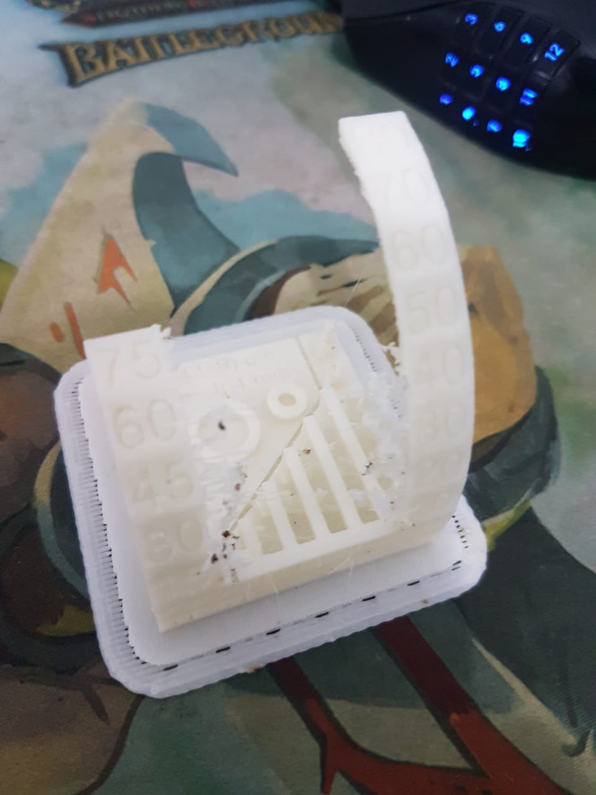
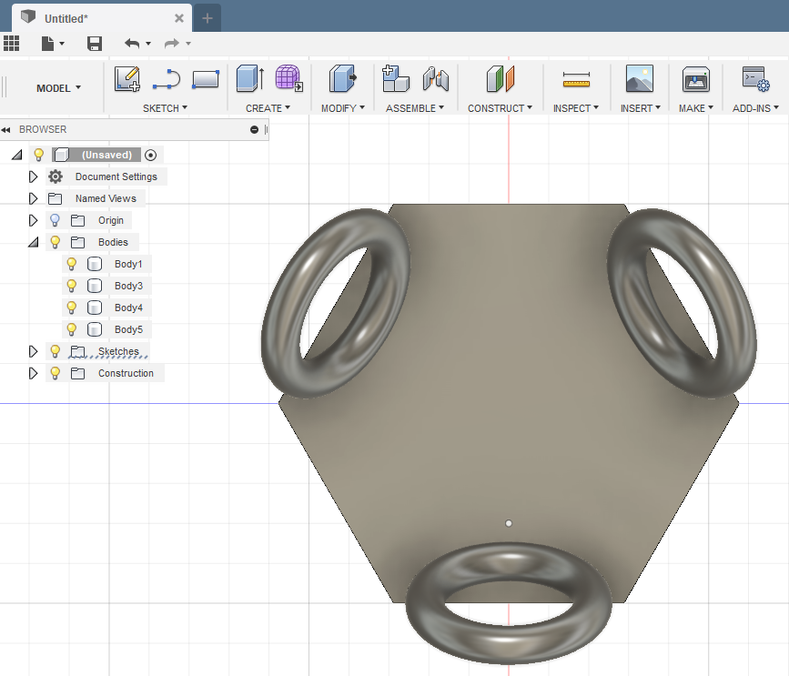

3D Scanning and printing
Assigments: 3D Print
- Group: Test the design rules for your printer(s)
- Design and 3D print and object that could not be made substractively .
Assigments: 3D Scan
- 3D Scan and object
3D Print
Machine specs
Printer used for this group assignment are Sindoh, Makerbot and Zortrax. Here are details of each one:
- Sindoh
- Makerbot
- Zortrax
Group Assignment - Testing
For this assigment we downloaded a model from Thingiverse. Sending the same file to 3 different machines we got this:
Sindoh
Test on this printer went bad. Piece could not grasp correctly on printer bed and moved. Tried a second time and same. We moved to the next printer.
Makerbot
Second test using makerbot. The print job have no supports and its working with a 30% infill.

The printer make an amazing work here. Cilinder and vertical bars have great definition. Overhangs looks good and suspended bars doesn´t look messy. Overall it´s a really nice piece.
Zortrax
Now we are using the AIO 3D Printer TEST for Zortrax.

The first thing to notice is there are material strings all over the piece. Acording to Simplify 3D, this issue can be solved enabling retraction. However, this problem can be considered a minor one, and after some cleaning and sanding. The piece looks really nice.
As a conclussion, it seems all printers can work fine but may have some issues with some prints. For example if the Zortrax test would be an fluid print, the retraction problem would really small.
Another thing to test every time we are working with a 3d Print is to test overhang. I been working with 3D printers several years now and for me its really nice to see there are good printers that work wonderfull without support. Thats a really nice feature since this technology makes support removal a pain.
Personal Assignment - A not-possible-by-sustractive design
Here I´m going to do a chainmail (or plastic-mail for exact material consideration). Using a tutorial found in this youtube video, I will design my own chain mail using Fusion 360. It starts by drawing a circunscribed-hexagon (10 mm side).

Next I´m adding rings (torus) which will server to conect to other "hexagons". 1 ring with 4.2 mm inner and 1 mm torus diamater is placed. I move the piece to match the center of the torus with the side of the hexagon, and to be centered. Finally an angle (30°) is given and from the wellplaced part, 3 rings are made using pattern feature on a full revolution. .

Now I´m adding the cilindrical connections. This shafts will entangle with the torus and help the piece to separate with a wide base on top of it.
I sketch a circle on top of the hexagon, with dimater of 2.5 mm.
I create a parallel plane (3.2 offset) to draw a second circle.
Now using Loft tool I create the body. Once the pillar is created, I make another sketch to create the "lock" on top of it. With a diameter of 3.3 mm and an extrusion of 0.3 mm, I seal the lock with a 1mm fillet.
Once the piece is complete, I make a rectagular patter to make 5 copies (11mm away) of each piece. The resulting piece is exported to STL and prepared to 3D Print.
And here is the result. I have kind of difficult time to remove the raft. It broke some of the panels but most of them make it.
Downloads
3D Scan
Machine specs
I will be using a Sense scanner from 3D Systems, the specs can be here.
For this assignment, I will be using a new software I heard called Skanect.
Personal Assignment - Scanning an object
I will scan one of my pokemon figures for this assignment. The figure will be on a small table for easy circulation.
Once the program is loaded It will recognize the Sense scanner. Once started I need to keep a good distance (like half meter away) because it wont recognize the model if too far or close. Another consideration is to keep a slow and steady pace, if not the software will tell you that you need to get back to previous pose.
Once scan is completed, the softare will create the model to export.
Resolution wasn't very good but it is probably software related. When downloading Skanect free version, it limits the scan to 5000 polygons. Meaning it just to "test" the scan.
When exported to STL file, the poly limit can be seen clearer, when the Pikachu figure is only rought polygons.